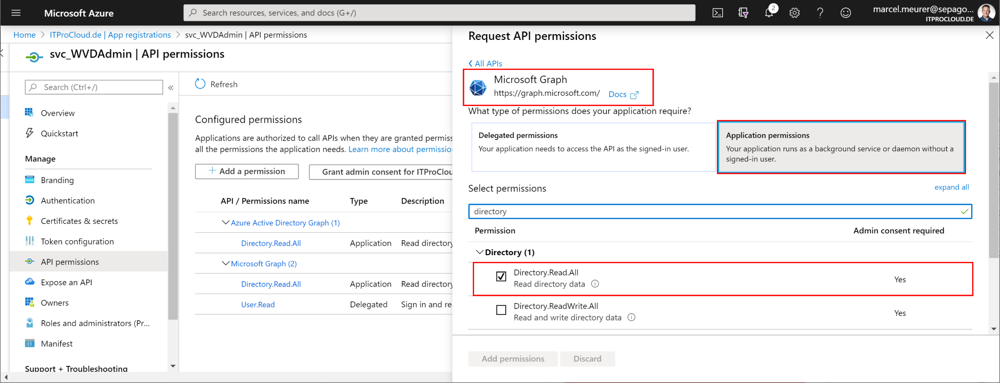
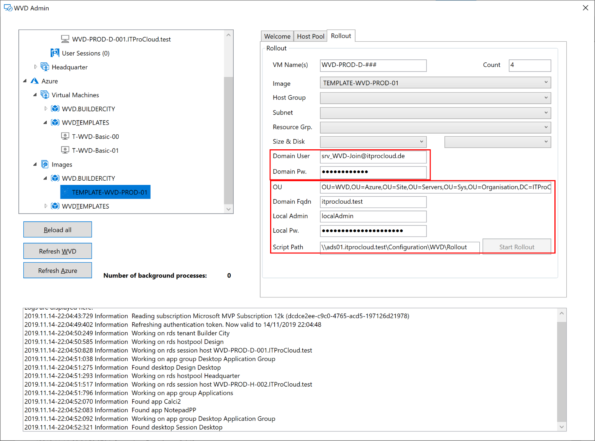

WVDAdmin - A native administration Gui for Azure Virtual Desktop (AVD) / Windows Virtual Desktop (WVD)
Azure Windows Virtual Desktop administration with WVDAdmin 
Azure (Windows) Virtual Desktop is generally available under continuous improvement and currently available in the ARM and in the Classic (Fall) version. The ARM version is completely into the Azure Portal. Sometimes it helps to have a native GUI to make some configuration and - for me, most important - to have an easy image handling to deploy session hosts based on a template VM (golden image approach). Therefore I build a native Windows application to do this, and I’m happy to share it with the community.
Are you interested in the new “Hydra for Azure Virtual Desktop” solution to manage AVD even better with a lot of automation? Check it out here.
Download the latest release from 05/06/2023
Check out the Youtube video to install and configure WVDAdmin in four steps
The current version supports a lot of configuration and administration capabilities, and I’m continuously improving WVDAdmin. Some features:
- Imaging
- Create images from golden masters (without destroying the master)
- Handle sysprep and modern app
- Clean-up
- Use of shared image gallery definitions
- Rollout
- Rollout of multiple session hosts
- Store some base settings encrypted for reuse (domain join name, password, …)
- Select VM type for each rollout (is not fixed to the host pool)
- Use of ephemeral disks
- Support of a second partition from the master VM (D:)
- Azure Monitor
- AAD only, join to MEM/intune
- AVD Support
- Classic AVD
- ARM AVD (Spring Update)
- Migration of resources and session hosts
- Working with AVD resources
- Add/create/delete
- Host Pools
- Application groups
- Workspaces
- Session hosts
- Working with user sessions
- Disconnect
- Logoff
- Send message
- Shadow
- Add/create/delete
- Session hosts
- Move between host pools
- Start/Stop/Restart
- Delete - with VM, disk, and nic
- Get error report from AVD agent
- Run scripts remotely on hosts (trigger Windows updates, enable RDP Shortpath, …)
- Change drain-mode
- Change disk type, e.g.: on-start -> to Premium, after deallocation -> to HDD(for cost savings)
- Remove user assignment
- Virtual machine
- List all VMs with power state in all subscriptions
- Start/Stop/Restart
- Run scripts remotely on hosts (trigger Windows updates, enable RDP Shortpath, …)
- Shrink disk to 64 or 32 GByte (to create small images for ephemeral hosts)
- Change disk type, e.g.: on-start -> to premium, after deallocation -> to HDD (for cost savings)
- Create and restore snapshots with a click
- Add an existing domain-joined VM as a session host
- Others
- Multi-Tenant switch
- Split-Tenant mode
- Search for unused disks and nics
- Rollout VM Scale Sets
- Start and deallocate Scale Set instances
- Re-image Scale Set instances
- Remove customer-managed key (CMK)
- …
Installation
Release History
Download the latest release from 05/06/2023 Check out the Youtube video to install and configure WVDAdmin in four steps
I'm continuously updating WVDAdmin to make it easier to administrate and deploy WVD, users, and session hosts. Click to see the change history.
| Release | Date | Changes & Notes |
|---|---|---|
| 1.7.59.0 | 2023-05-06 | Add: Custom scirpt extension can ask for a parameter (see CustomScript-WithParameterString.ps1) |
| 1.7.58.0 | 2023-04-07 | Add: Ressetting the SCCM/MECM configuration during imaging; speed-up imaging for Windows 11 22H2 |
| 1.7.57.0 | 2023-04-03 | Fix: A DLL was missing to read the Winget data (current packages) |
| 1.7.56.0 | 2023-03-25 | Add: Update the imaging script to be even more resilient to sysprep issues. Sysprep is now monitored, and some workarounds for sysprep are triggered automatically in case of a sysprep error |
| 1.7.55.0 | Fix: Deployment tags with an empty value are now set | |
| 1.7.54.0 | Add: If a larger disk size is used as the image: the last partition will be automatically extend; Add: Gallery images for Windows 10 22H2 | |
| 1.7.52.0 | Add: Better handling for AAD only joined VM | |
| 1.7.51.0 | Add: Support for Central India as meta-data location | |
| 1.7.50.0 | Add: Workaround to image Windows 11 22H2 (there is a bug in the sysprep process) | |
| 1.7.49.0 | Add: Secure boot enabled hosts are now supporting ‘Guest Attestation’ (automatically installed) | |
| 1.7.48.0 | Fix: Support for Azure Disk Encryption fixed (ADE); Change to the PowerShell script: Avoiding a sysprep issue with the desired state configuration | |
| 1.7.47.0 | Fix: GUI, overlapping checkbox for use newes agent and secure boot | |
| 1.7.46.0 | Add: Additional Galley images; Add: Download newest AVD agent during the rollout (instead of using the agent stored in the image) | |
| 1.7.45.0 | Fix: Galley images are only shown if a custom image exist | |
| 1.7.44.0 | Add: Australia East as meta-data location | |
| 1.7.43.0 | Add: Support for FX-series VM size | |
| 1.7.42.0 | Add: You can filter on the ‘Virtual Machines’ by the string ‘!orphanhosts’. That shows all VMs created by WVDAdmin or Hydra as a session host but currently not part of any seen host pool (used internally the tags WVD.Path or AVD.Path); Change: Modify WVD.Path/AVD.Path in another way while moving a session host to another host pool | |
| 1.7.41.0 | Add: Japan East as meta-data location | |
| 1.7.40.0 | Fix: Move host pool: The user assignment was not always kept; | |
| 1.7.39.0 | Add: You can enable “Secure Boot” for marketplace images and for Custom Images in an Azure Compute Gallery (configure the VM image definition to support Secure Boot before copying a captured image to the gallery definition) | |
| 1.7.38.0 | Add: Deploy Azure market place images; Add: Show assigned users in the session hosts tab | |
| 1.7.37.0 | Add: Adding VM Size: NCasT4_v3-series; Add: All new created VMs are flagged to delete nic and disk if the VM is deleted in the Azure Portal | |
| 1.7.35.0 | Add: NoTags-mode. Prevents WVDAdmin to set the default tags on new session hosts, scale sets and images. Set HKEY_CURRENT_USER\Software\ITProCloud\WVDAdmin\NoTags to 1 (NoTags is REG_DWORD32) | |
| 1.7.34.0 | Add: Having custom script for imaging and deployment based on the tenant friendly name if running in the multi-AAD-tenancy mode Follow this link | |
| 1.7.33.0 | Add: Dark-mode. Set HKEY_CURRENT_USER\Software\ITProCloud\WVDAdmin\DarkMode to 1 (DarkMode is REG_DWORD32) | |
| 1.7.32.0 | Fix: Using AAD-only expected the unnecessary field domain FQDN and the rollout button was greyed out in some situations | |
| 1.7.31.0 | Add: Support for NVadsA10v5 VM types | |
| 1.7.30.0 | Add: You can now deploy a host in a named availability zone (normally, the zone is (optional) automatically calculate to spread hosts around different zones | |
| 1.7.29.0 | Add: WVDAdmin stores the last rollout configuration and now (that is new), the last image, host pool, VM-size, storage type, etc. | |
| 1.7.28.0 | Fix: Gettting the diagnostic setting on a host pool changed (updated API) | |
| 1.7.25.0 | Change: Configure diagnostic settings now enables all logs | |
| 1.7.24.0 | Add: You can directly re-assign a user to a VDI session host or delete an assignment (on the session host tab change or delete the user asssignment) | |
| 1.7.23.0 | Add: A new tab shows the name of the current background processes (Jobs) | |
| 1.7.22.0 | Fix: In some cases a VM-Scale-Set Instances where not shown and crashes the application | |
| 1.7.21.0 | Fix: VM Scale Set rollout issue | |
| 1.7.20.0 | Experimental support for building session hosts based on a secure boot Golden Master | |
| 1.7.19.0 | Add: VM sizes for D and E series V5 | |
| 1.7.18.0 | Add: Change the VM size for multiple VMs (Azure -> Virtual Machines); New images are created with tags including the timestamp and resource ID of the master VM | |
| 1.7.17.0 | Change: The API permission for Azure AD Graph is no longer needed for the service principal if you are using WVDAdmin for AVD (spring edition) | |
| 1.7.16.0 | Add: Session host rollout will set an additional tag to VM, Nic and Disk: WVD.Host= |
|
| 1.7.15.0 | Fix: If you deallocate a VM without tags, the VM is deallocate but an error message is/was shown (Changing power state of Azure vm was not successful Object reference not set to an instance of an object.) | |
| 1.7.14.0 | Change: Uninstallation of th RDAgent (if you capture a session host is now faster) | |
| 1.7.13.0 | Add: Join MEM/Intune while rolling out session hosts; Add: Function to shrink a disk of a VM to 32 GByte to rollout cheaper instances and/or use smaller instances with ephemeral disks | |
| 1.7.11.0 | Add: Optimization to capture a session host for a new image | |
| 1.7.09.0 | Change: Change the rollout process to be more reliable if you deploy a lot of hosts at once; Fix: Secrets can now have special characters | |
| 1.7.05.0 | Fix: The windows can now be resized to full-screen | |
| 1.7.01.0 | Add: Support to show subscription name in rollout and imaging tab (set HKEY_CURRENT_USER\SOFTWARE\ITProCloud\WVDAdmin\ShowSubscriptionName to (reg-dword)) | |
| 1.7.00.0 | Add: Support to deploy AAD-only session hosts; Fix: Resize of V2 VM disks | |
| 1.6.99.0 | Add: Meta-data location for Canada and the UK | |
| 1.6.98.0 | Fix: Resize the application window height in case you have a smaller resolution (<828 px) | |
| 1.6.97.0 | Add: Remove a Customer Managed Key (CMK) from a VM / Disk | |
| 1.6.96.0 | Add: Support for the Edv4- and Edsv4-Serie | |
| 1.6.95.0 | Add: You can now use CTRL+C in each table to copy the content of the selected column | |
| 1.6.94.0 | Fix: An import of the registry settings failed if the windows decryption key is other than the user who exported the settings | |
| 1.6.92.0 | Fix: A session host could be visible in the session host tab of anonter hostpool if the resource id of the host pools starts with the same string | |
| 1.6.91.0 | Add: Create and restore snapshots of a VM (right click the VM in the Azure node) | |
| 1.6.90.0 | Add: Function to shrink a disk of a VM to 64 GByte to rollout cheaper instances and/or use smaller instances with ephemeral disks | |
| 1.6.89.0 | Add: Workaround to fix an issue in the Azure API querying VM. In subscriptions with a lot of VMs an error message could given back from the API which will be workaround with this version. Original error message from Azure: Resource provider ‘Microsoft.Compute’ failed to return collection response for type ‘virtualMachines’ | |
| 1.6.88.0 | Add: Option to rollout virtual machines based on an image without joining to WVD/AVD (for servers, new golden masters, …), Update: Newest PowerShell script for generalizing and deployment to 3.0: ITPC-WVD-Image-Processing.ps1 | |
| 1.6.87.0 | Add: Option to switch on “Power on connect” for pooled (and assigned) host pools (preview feature) | |
| 1.6.86.0 | Add: Option to directly roll-out new session hosts with actice Azure Disk Encryption (ADE) - See “secret features” below | |
| 1.6.83.0 | Fix: Update of ITPC-WVD-Image-Processing.ps1 - if you run it from a share with prepared MSIs, the MSIs are ignored and downloaded directly from Microsoft | |
| 1.6.82.0 | Add: Script to enable screen capture protection per session host | |
| 1.6.81.0 | Add: Localized time for the session list (WVD classic) | |
| 1.6.80.0 | Add: Message box before logging users off | |
| 1.6.79.0 | Add: VM list in the “Virtual Machines” node are now showing the private IP | |
| 1.6.77.0 | Add: Official support for meta-data regions: West Europe and North Europe | |
| 1.6.76.0 | Fix: New applications failed to create in an existing application group | |
| 1.6.75.0 | Fix: In some cases session hosts are not displayed in the session hosts node (no matching resource id - upper-case / lower-case issue) | |
| 1.6.73.0 | Add: Automatically change the disk type on start/stop: Add a tag “WVD.AdvDiskType” to a VM with the value “StandardSSD_LRS” or “Premium_LRS”. On the stop, the disk is converted to HDD (lowes costs), and on start, the disk is converted to the named type. Works only with WVDAdmin (not from the Azure Portal or scaling solutions) | |
| 1.6.72.0 | Add: Fix for a sysprep failure (Sysprep data was marked corrupt; cannot proceed) in the ITPC-WVD-Image-Processing.ps1 script; Add: Better handling for shutdown/start/delete VM tasks in the Virtual Machines node | |
| 1.6.71.0 | Add: The disk size for new session hosts can be selected (optional) to have a higher IOPS performance | |
| 1.6.70.0 | Add: For preview only: Checkbox to enable upcoming “Start on connect feature” | |
| 1.6.69.0 | Fix: Open files are not shown if different storage accounts in different subscriptions are used under some circumstances | |
| 1.6.68.0 | Add: West Europe as metadata location (can only be used if the subscription is in an appropriate preview program); Add: Some scroll bars to list boxes | |
| 1.6.66.0 | Fix: Rollout from session hosts based on a share image gallery item failed in another subscription then the subscription containing the gallery image | |
| 1.6.65.0 | Add: Security query before hosts are started, stopped or restarted | |
| 1.6.64.0 | Add: Install session host optionally with Azure Monitor Extension or sepago Azure Monitor (for Azure Monitor Extension: Make sure that you have configured the target host pool correctly once: Right-click -> Configure Diagnostic settings) | |
| 1.6.62.0 | Add: You can now terminate file handles to an Azure Storage (orphaned handles avoiding a user to log in with its FSLogix profile) - Service Principal needs contributor permissions to the storage account | |
| 1.6.61.0 | Add: VC++ runtime if you use the destkop installer | |
| 1.6.60.0 | Add: Manage your Virtual Machines like session hosts: Click on Azure - Virtual Machines to list all VMs in your subscriptions (note: data for the VMs are are delayed (resource graph)) | |
| 1.6.59.0 | Change: Rollback of advanced logging of create VM / create Image Powershell script: Shows unimportand messages as an error with existing images | |
| 1.6.57.0 | Add: You can enable diagnostic settings directly on a host pool, appgroup and workspace (right-click); Fix: Sometimes reading the state of a script extension is not directly possible. This cause that the WVDAdmin log shows an error even if everything works as expected | |
| 1.6.56.0 | Change: Single session nodes are not listed under the session host node if more then 100 sessions exist to speed up WVDAdmin - all sessions are still in the session list | |
| 1.6.54.0 | Add: Function to delete unused disks and nics; Add: More logging for the rollout of session hosts; Add: New VM-types, like L4s_v2, … | |
| 1.6.53.0 | Add: Add session hosts automatically to Loadbalancer Backend Pools; Add: If a VM resource is unavailable, the first alternative VM size will be tried | |
| 1.6.51.0 | Add: Custom script to install Azure Monitor for WVD from sepago to existing session hosts | |
| 1.6.50.0 | Add: Support for Dhsv3 | |
| 1.6.46.0 | Add: You can now rollout new session hosts with accelerated network configuration, Change: NICs are now created with the name of the VM | |
| 1.6.45.0 | Add: Add session hosts automatically to ASGs | |
| 1.6.42.0 | Add: Support for Dasv4-series | |
| 1.6.41.0 | Add: Experimental feature: Add applications to session hosts from Windows Package Manager repository | |
| 1.6.40.0 | Change: Having a script-path for building images is no longer needed. If you leave the text box empty, the local script coming with WVDAdmin will be used and directly send to the VM | |
| 1.6.35.0 | Add: On a session host > State > Mouse over will show the health report of the host | |
| 1.6.34.0 | Fix: The drop-down list “Feature release” was not shown correctly. Feature release is the selector between the different WVD/AVD versions like Fall (WVD classic) and Spring (WVD modern on ARM) | |
| 1.6.32.0 | Add: You can run scripts on multiple classic session hosts: Win Updates: Install new available updates; Custom script: Custom script located in the program files folder of WVDAdmin | |
| 1.6.30.0 | Add: Sorting order for WVD/AVD resources | |
| 1.6.29.0 | Add: Support for Eav4 and Easv4-series | |
| 1.6.28.0 | Add: Speed up adding a lot of VMs to the treeview | |
| 1.6.27.0 | Add: Support for using availability zones. Select it from the drop-down list right to the resource group list | |
| 1.6.26.0 | Add: You can run scripts on multiple ARM session hosts: Win Updates: Install new available updates; Custom script: Custom script located in the program files folder of WVDAdmin | |
| 1.6.24.0 | Add: Multi selection and action on session hosts for ARM if you select a session host container; Fix: Scale Set instances wasn’t shown in 1.6.23 | |
| 1.6.23.0 | Fix: New image was not visualized in the tree view after creation | |
| 1.6.22.0 | Add: Support for shared image galleries: Add a shared image gallery from the Azure Portal into a resource group managed by WVDAdmin. In WVDAdmin right-click an existing image and select “copy to shared image gallery”. An image can be rolled-out right clicking the shared image | |
| 1.6.21.0 | Add: Double-click on the tag Logs, Sessions or Sessions V2 enlarge the part of the windows (double-click again to revert) | |
| 1.6.18.0 | Fix: API change from Microsoft cause that updating a host pool property fails if the location is written like “Central US” (centralus is no problem); Add: First version able to deploy session hosts from images in a image gallery | |
| 1.6.16.0 | Add: Session hosts icons are now based on the availability state; Fix: Enumerating thousands of sessions with thousands of session hosts takes longer as expected (> 4 minutes) | |
| 1.6.14.0 | Add: Support US Government Cloud. Activate: Add a new string Reg_SZ “Environment” with value “US” to HKCU\SOFTWARE\ITProCloud\WVDAdmin” | |
| 1.6.12.0 | Add: Support for VM types: Dv4 and Dsv4-series, Ev4 and Esv4-series | |
| 1.6.11.0 | Fix: WVD/AVD ARM resources are deployed with the tags; Workspaces and host pools are separated by subscription name | |
| 1.6.9.00 | Fix: Generating toke for Spring host pool fails sometimes (Error: ExpirationTime value must be between one hour and 30 days from now” - An error occurred while gathering an WVD2 token from backend: Object reference not set to an instance of an object.) | |
| 1.6.5.00 | Add: Support for DD_v2 and DDS_V4 virtual machine types; Fix: Forwarding from the WVD/AVD API cause a authentication lost (error 401, 403 reading resources in the FALL update) | |
| 1.6.4.00 | Add: Support for GEN2 virtual machines | |
| 1.6.2.00 | Add: New naming feature for new session host. Default (is): Name for a session host is the highest matching name +1; new concept (must be enabled): Name for a session host is the next free name. To enable add a reg dword to HKCU\Software\ITProCloud\WVDAdmin Name:NamingMode and value to “1” | |
| 1.6.1.00 | Fix: Default session limit for V2 host pool is now 999999 | |
| 1.6.0.00 | Change: The tag WVD.Path is aligned to Microsoft naming of “tenant” and “host pool” for the spring update. Tenant=resource group name and no longer subscription name | |
| 1.5.9.00 | Add: Load assigned users button to the app group tab (fall update) | |
| 1.5.7.00 | Add: You can join existing VM’ to a host pool (VMs must be domain joined and not in a host pool right now) | |
| 1.5.6.00 | Add: You can now move session host around host pools not created with WVDAdmin (it downloads the necessary files automatically); you can join existing VM’ to a host pool (VMs must be domain joined) | |
| 1.5.5.00 | Fix: Enumerating VMs was endless in some circumstance | |
| 1.5.4.00 | Add: Migration from Fall to Spring Update; moving session hosts to another host pool | |
| 1.5.3.00 | Fix: Improvement updating the treeview | |
| 1.5.0.00 | Add: Supporting the WVD Spring Release / Spring Update ; Some user operations from the session grid are now async; Fix: Spontaneous resize of the windows if data are reloaded | |
| 1.4.9.00 | Add: Filter users, session hosts and host pools in the overview of sessions | |
| 1.4.8.00 | Add: Support to add users by groups from Azure Active Directory, including an AAD browser (check my blog post and configure the service principal to use this feature) | |
| 1.4.6.00 | Add: New VM sizes; all new scale sets are deployed as really scalable version (up to 600 instances each) | |
| 1.4.4.00 | Fix: Service Principal Keys with some special characters are working now; Add: Faster loading of resources from WVD/AVD and Azure backend | |
| 1.4.2.00 | Add: Support for NVv4 VM sizes (based on AMD Radeon Instinct MI25-GPU); support to set custom Azure tags for resources while deploying resources | |
| 1.4.0.00 | Fix: From an older version, disks are deployed as standard-hdd even if premium-disk was selected; Change: Connection views are now located parallel to the logging list on the bottom (tenant-view); Add: Function to check for an updated version via https://blog.itprocloud.de/assets/files/WVDAdmin.xml | |
| 1.3.6.00 | Add: New tag for session hosts: WVD.Path - used by Azure Monitor for WVD and Azure Autoscale for WVD - aka Project MySmartScale if an installed language pack conflicts with the Microsoft RDAgent (read this post to learn more) | |
| 1.3.5.00 | Add: Allow an local admin to shadow a user session (WVDAdmin needs direct access to the session host via RDP) | |
| 1.3.4.00 | Add: Networks are now listed as VNET/SUBNET in the rollout tab | |
| 1.3.3.00 | Add: Support for a special mode if your WVD/AVD tenant and the session hosts in two different Azure Active Directory tenants | |
| 1.3.1.00 | Fix: WVDAdmin crashed if 1.3.0 is your first version of WVDAdmin (HKEY_CURRENT_USER\Software\ITProCloud doesn’t exist while checking for multi-tenancy mode) | |
| 1.3.0.00 | Add: AAD multi-tenancy mode (drop down list to handle different AADs) - https://blog.itprocloud.de/Windows-Virtual-Desktop-Windows-Virtual-Desktop-Administration-for-CSP-and-Consulting-Partners | |
| 1.2.8.00 | Add: If you click a tenant a tenant wide list of sessions is listed. Logoff or send messages to multiple sessions | |
| 1.2.7.00 | Add: The main window of the application is now resizeable | |
| 1.2.5.00 | Add: Support for Scale Sets (with normal and ephemeral disks) -> see below | |
| 1.2.4.00 | Add: Support for availability sets | |
| 1.2.3.00 | Add: Support for automatic and static assigned host pools | |
| 1.2.1.00 | Fix: Logging of rollout parameter by Azure custom extension is removed to avoid logging secrets | |
| 1.0.0.30 | Fix: Rollout - OU can now be empty to join the default OU | |
| 1.0.0.29 | Add: Supporting “special license mode” to save up to 50% on compute-cost (https://docs.microsoft.com/en-us/azure/virtual-desktop/apply-windows-license) | |
| 1.0.0.26 | Add: Template VM can now be a VM with a standard disk (non-managed) | |
| 1.0.0.25 | Fix: If you delete a VM the OS disk will deleted as well | |
| 1.0.0.23 | Support for ephemeral disks | |
| 1.0.0.22 | First published version - without auto-update of WVDAdmin |
Configuration
Service principal (functional account)
To work with the GUI, you need a service principal (function account) with permission to administrate access to the AVD and Azure resources. I decide to use a service principal to avoid confusion if my Azure AD user is only a guest account in the AVD tenant I have to administrate and easily switch between different tenants.
To create a service principal, go to your Azure AD -> App registration -> New registration and type a name for your principal like “ svc_WVDAdmin” and press “register”.

Click on “certificates & secrets”. Click “new client secret”, select a validity period and a description (like “Key01”). Press “add”.
Copy the generated key directly - it will never be displayed again. Note the key for later.

To assign users to app groups, the service principal needs one API permissions to get the users and groups from Azure AD (optional):
Add the permission “Microsoft Graph” -> Application Permission -> Directory.Read.All

To consent, the permission and administrator of Azure AD have to grant this:

Go to “Overview”. Note the “Application (client) ID” and the “Directory (tenant) ID” as well.
You now have all data for your service principal:
- Tenant id
- Service principal id (application id)
- Service principal key
AVD permissions
This chapter is for AVD ARM / Spring. Skip this chapter if you only work with WVD Classic (Fall).
The service principal needs permission to add and modify AVD resource objects (host pools, workspaces, app groups). To assign users and groups to app groups, the service principal needs the owner role on the resource groups you want to use for your AVD environment. Add the service principal in the next step and use the owner role.
Register Resource Provider
If you have never worked with AVD, you have to register the AVD resource provider once. To do that, go to the Azure portal -> subscriptions -> select your subscription -> Resource providers
Search for “Microsoft.DesktopVirtualization” and click on “Register”.
Azure resource permissions
The service principal needs permission to subscriptions or resource groups to manage your AVD resources, imaging template VM and rollout session hosts.
Open the Azure portal and go to the resource groups you want to use or to the subscriptions. In each resource group/subscription, click “Access control (IAM)” -> select “Add” -> Add role assignment. Select “owner” and search in “Select” for your service principal name. Click on the principal and save the settings.
Note: Owner is needed to assign users to app groups. For other resources, “contributor” is fine.
The service principal must have permissions to your virtual network (vnet) to assign new VMs to the right subnet. Go to your vnet, click “Access control (IAM)” -> select “Add” -> Add role assignment. Select “contributor” and search in “select” for your service principal name. Click the principal and save the settings. You could skip this step if you assigned the service principal to the subscription or to the resource group containing your vnet.

Prepare your “native” Active Directory
Today each session host must be part of a “native” active directory domain (or have to use the domain services). To add new session hosts unattended, we need an administrative user account to add a computer object to the active directory domain. You can use an existing one, or you can create a new service user:
Open “Active Directory Users and Computers” and create a user object with a complex password, and set a password to “never expire” (if you fine with this). I added the user srv_WVD-Join@itprocloud.de.
Delegate permission for the user to an OU. I found a really good blog post from Prajwal Desai. Check out hist post on (external web site): Method 2 – Delegate rights to user/group using Active Directory Users and Computers
In my case I added my function account to: “OU=WVD,OU=Azure,OU=Site,OU=Servers,OU=Sys,OU=Organisation,DC=ITProCloud,DC=test”
Optional: Create a file share
In earlier versions (<1.6.40), you had to provide the deployment script and the AVD agent binaries on a custom file share or blob storage. With WVDAdmin 1.6.40 or newer, this no longer mandatory. In some cases, where virtual machines don’t have access to the internet to download the AVD agent binaries, you can use a custom file share.
Read more.
Hint: Alternatively, you can use Azure blob storage to store the script. Make the blob storage read-only and use the URL as rollout script-path. E.g.: https://sharedservices01.blob.core.windows.net/wvd
Create a file share for the configuration script (which adds new session hosts to the domain and install the AVD agent). Give everyone at least read permissions. Set the NTFS permissions to everyone and read. This is necessary while during the first startup, the VM extension tries to execute the script. In this process, the file share is accessed anonymously.

Place the following files in this share:
- ITPC-WVD-Image-Processing.ps1 (rename the download to .ps1)
- Microsoft.RDInfra.RDAgent.msi (rename the file)
- Microsoft.RDInfra.RDAgentBootLoader.msi (rename the file)
Make sure that you rename the files to fit the list above (without version numbers).

Important: If you are using Windows Server 2019 as file share, make sure that anonymous file share access is enabled. Create a GPO for the session hosts containing the following configurations:
- Security Options:
- Accounts: Guest Account Status: Enabled
- Network access: Let Everyone permissions apply to anonymous users: Enabled
- Network access: Do not allow anonymous enumeration of SAM accounts and shares: Disabled
Configure WVDAdmin
Please start WVDAdmin. Before you load AVD and Azure data, copy the Azure tenant id, service principal id, and service principal key into the welcome tab. Press save and load the data by clicking “Reload all”.
You are now able to administrate WVD, create images from template VMs and rollout new session hosts.
The first time you want to roll out new session hosts, you have to enter some information from your Active Directory and file share configuration from above:

Local Admin and local pw. are the local administrator account credentials which you can enter at this time.

Build an image
You can rollout VMs and VM Scale Set with images created by WVDAdmin. These images contain the logic to join the AD domain and WVD.
You can simple create an image from a template VM. The template VM must part of your AD like a standard client. You have not to sysprep or to normalize this template VM. Use the same template VM for Windows and application updates.
Following these steps to build your template:
- Install a VM in the Azure portal. Select the right OS (like Windows 10 Enterprise for Virtual Desktops)
- Make all Windows updates
- Join the VM to your AD
- Install your application
- Make your customizing (like installing language packages)
- Shutdown the template VM
To create the image, open WVDAdmin and
- Navigate to the Azure template VM (Azure -> Virtual Machines -> RG -> VM)
- Right-click -> “Create a template image”
- Select the resource group to store the image
- Press “Capture”
You can and should reuse the template VM for new updates and applications. After these changes, shut down the template VM and create a new image.
Tipps & Tricks
VM Scale Sets
First node: VM Scale Sets cannot autoscale AVD session hosts. Auto-scaling only works for stateless services like a web server. But if you need hundreds of session hosts, then VM Scale Set allows you to work with these numbers efficiently.
Read more
From version 1.2.5, WVDAdmin support VM Scale Sets. A Scale Set can have several instances, which are the VMs / session hosts. There are some essential things you have to know if you use VM Scale Set with WVDAdmin and AVD itself:
- Build a Scale Set with WVDAdmin. Select an image, right-click and select “Create session host from image”. Check “Rollout as VM Scale Set”
- You can use regular disks and ephemeral disks. If you use ephemeral disks, you cannot deallocate the instances of your Scale Set. You have to delete the instances
- Today, you can not use ultra disks
- You can add and remove instances with WVDAdmin or in the Azure Portal. New instances will join the domain and WVD
- A new instance can only join AVD if the session host with the new name doesn’t exist. If you delete instances, the session host entry will also be removed
- You can re-image single instances or all instances of a Scale Set. After that, the instances are “clean” as at the first rollout
- Adding instances or re-imaging assumes that the Scale Set configuration (which is a custom script extension) has a valid AVD token to join new instances to WVD. While AVD provides only one token per host pool and that the token can be expiring, you can update the token with a right-click on the Scale Set and select “Update WVD token”. The max. lifetime of a token is 59 days
- Unfortunately, WVDAdmin cannot change the source image for a VM Scale Set. So if you want to update the image for a host pool, take these steps:
- Rollout a new Scale Set based on the new image
- Disable new logons for the old session host from the previous Scale Set
- Test the host pool based on the new Scale Set
- If no user logged on to the ancient Scale Set, remove all instances from the Scale Set (this deletes the session hosts in AVD as well)
- Remove the Scale Set
Ephemeral disks
Ephemeral disks are awesome. They give you a high performance free of charge. Especially in a AVD multiuser environment where no data a stored permanently on the session hosts, this kind of disk can give you some value add.
Read more
Ephemeral disks are running on the Azure hypervisor and not stored. This has some advantages:
- There are no storage costs (!)
- A very high data throughput because the disks exist on the hypervisor
- See @MichaWets blog post for more information: https://www.cloud-architect.be/2019/07/15/windows-virtual-desktop-running-on-ephemeral-os-disks/
Please note:
- You can not deallocate a VM with this disk type - you have to delete the VM (and roll out a new one instead of starting a “normal” VM)
- Not each VM size is available, and there are limitations of the disk size (image size for rollout) based on the VM size: Max ephemeral disk size for Standard_D4s_v3 is 64 GByte while a Standard_D8s_v3 can have up to 128 GByte. See https://docs.microsoft.com/en-us/azure/virtual-machines/linux/sizes-general
- If the Azure hypervisor fails, your session host will fail as well and can not be re-deployed automatically
Secret Features
WVDAdmin has some features not directly visible but configurable via registry keys. All settings in the registry are in the current user part under HKEY_CURRENT_USER\SOFTWARE\ITProCloud\WVDAdmin. Keep in mind to restart WVDAdmin after changing the registry settings.
Read more
Dark-mode
From version 1.7.33 WVDAdmin can be run in dark-mode. Set the following reg value and restart WVDAdmin: HKEY_CURRENT_USER\Software\ITProCloud\WVDAdmin\DarkMode to 1 (DarkMode is REG_DWORD32)
Multi-Tenant-Mode
From version 1.3.0 WVDAdmin will support a multi-AAD-tenancy mode allowing to switch the Azure AD tenant very easily. Follow this link
Having multiple Service Principals for a single Tenant
In the Multi-Tenant-Mode, you can add one service principal per tenant. Sometimes you need more service principals for the same tenant. You can add more service principals for a tenant if you append #1 directly behind the tenant id (or #2, …).
Naming of the Session Hosts
If you deploy session hosts to a host pool, WVDAdmin counts up the names from the highest available VM. E.g., if you have a session host with the name “WVD-PROD-012” and you rollout new hosts (WVD-PROD-###), the first new hostname is “WVD-PROD-013” - even if you have gaps in the existing numeration. You can force WVDAdmin to fill this gaps (non-existing hosts in the naming schema) if you set the following registry key: Reg-DWord: NamingMode = 1
Split-Tenant
Usually, the AVD tenant and the resources (sessions hosts) are in the same AAD tenant. If you have two Azure AD tenant, you can use WVDAdmin with a second service principal for the session hosts (resource tenant). Follow this link
US-Government Cloud
WVDAdmin can be used to deploy AVD in the Azure Government Cloud. You can enable WVDAdmin to work in the US Government Cloud via registry: Reg-SZ: Environment = US
Run custom actions simultaneously
From version 1.6.15, WVDAdmin supports custom scripts to run administrative tasks simultaneously on different session hosts. And that is easy to use and to extend. Follow this link
Add a session host automatically to an ASG
You can add a session host automatically to application security groups (ASG) within the rollout process. To achieve this, add one or more tags to the host pool containing your new session hosts. Name WVD.Default.ASG.X and add the azure resource id of an existing asg. X can be numbers to assign more ASGs. You can copy the id from an ASG from your browser. It looks like this: /subscriptions/<subscription-id>/resourcegroups/<resourcegroup-name>/providers/Microsoft.Network/applicationSecurityGroups/<asg-name>
Add a session host automatically to a Loadbalancer Backend Pool
You can add a session host automatically to a loadbalancer backend pool within the rollout process. To achieve this, add one or more tags to the host pool containing your new session hosts. Name WVD.Default.LBPool.X and add the azure resource id of an existing loadbalancer backend pool. X can be numbers to assign more ASGs. You can copy the id from a pool from your browser. It looks like this: /subscriptions/<subscription-id>/resourcegroups/<resourcegroup-name>/providers/Microsoft.Network/loadBalancers/<loadbalancer-name>/backendAddressPools/<pool-name> Keep in mind to use availability sets for each rollout to use this feature.
Rollout session hosts with Azure Disk Encryption (ADE)
Set two tags to the host pool to use it: “WVD.Default.KeyVault.Id” with the resource id of the KeyVault, “WVD.Default.KeyVault.KeyUri” with the URI (including the version) of the prepared key to wrap the secret.
Troubleshooting
Create an Image
- The image is not created. An error message occurs:
- Check if your template VM part of the AD
- If your file server Windows Server 2019, read above
- Check if you have set the NTFS and share permission correctly
- Azure portal: Go to the temp VM (next to the template VM) and check the extension installation state. There should be an error message like script not found, access denied, etc.
- Have you renamed the RD agent and bootloader?
- Is the script saved correctly: ITPC-WVD-Image-Processing.ps1, not ITPC-WVD-Image-Processing.ps1.txt
- Don’t forget to delete the temp VM and temp disk to avoid costs
- Make sure that your template VM uses managed disk
- The script generates additional log files in %WinDir%\System32\LogFiles
- Windows 7: Make sure to install PowerShell 5.1 and all Windows updates (including the optional updates without the language packages) to the template VM and restart the VM to take effect: https://www.microsoft.com/en-us/download/details.aspx?id=54616 Makes sure that you use the newest script file from 09/2020: ITPC-WVD-Image-Processing.ps1
- NEW: An endless loop of “Waiting for the temporary vm (power off)” : Update to the newest PowerShell script for generalizing: ITPC-WVD-Image-Processing.ps1
Others
- You have created a host pool, an app group, and assigned a user to the app group, but the user cannot see the apps/desktop.
- For AVD ARM: Don’t forget to create a workspace and link the app group in the workspace. The workspace is mandatory to show the users’ resources.
- For the HTML5 web site: Check the correct web address:
- ARM/Spring: https://aka.ms/wvdarmweb
- Classic/Fall: http://aka.ms/wvdweb